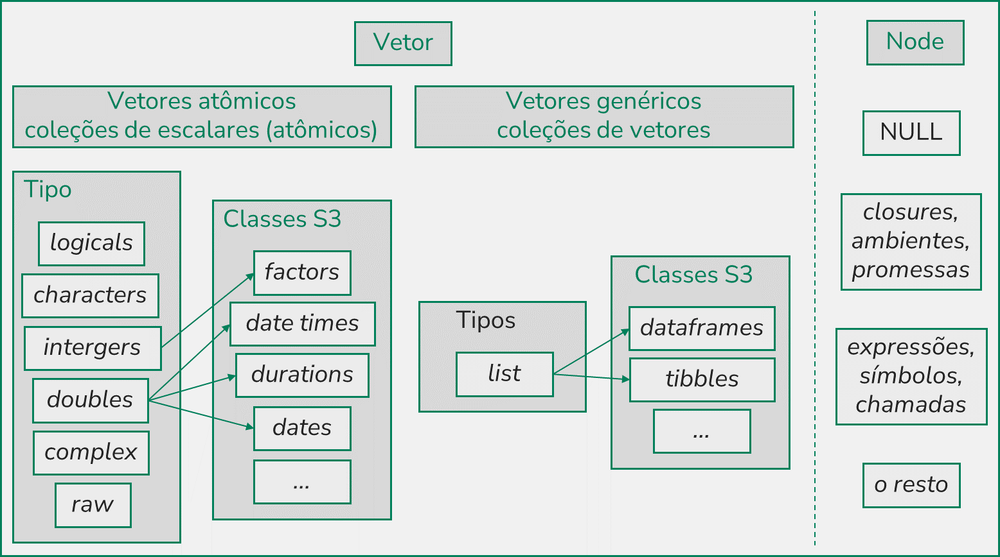

3 Tipos de Valores e Atributos
3.1 Introdução
Como vimos no capítulo passado, tudo que existe no R é um objeto. Eles são compostos de valores/dados e (potencialmente) atributos/metadados.
Haverão dois aprendizados principais: (i) temos duas famílias de tipos, todos os valores “do dia-a-dia” são vetores, e a outra contém os poucos tipos internos do R; (ii) a diferença entre vetores atômicos e genéricos; (iii) atributos são metadados, que alteram a interação dos objetos com funções, mas não suas características básicas. Especialmente o último ponto é muito útil para não precisar decorar funções para cada classe.
Aprenderemos também tópicos mais concretos: (i) quais são os tipos de vetores atômicos; (ii) valores NA; (iii) coerção de tipos; (iv) como criar e combinar vetores; (v) o básico dos atributos nome e dimensão, bem como das classes mais comuns no R.
3.2 Famílias de Valores
Na descrição dos tipos de valores, o R também apresenta uma simplicidade muito interessante! Existem duas famílias de tipos de valores: os vetores, e os nodes.
Os nodes são os tipos internos do R. Os principais estão abaixo, e não existem muitos outros:
- Funções (closures), ambientes, promessas – a serem estudadas no capítulo 6.
- Expressões, símbolos, e chamadas de funções – a serem estudadas no capítulo 7.
-
NULL, o objeto que denota a ausência de valor – a ser explicado neste capítulo.
Os vetores são os tipos de valores que estamos mais acostumados a lidar. Eles são divididos em dois: temos seis tipos de vetores atômicos, e um tipo de vetores genéricos (mais conhecidos como listas). Cada um será explicado em sua própria seção.
3.3 Vetores Atômicos
3.3.1 Tipos de Vetores Atômicos
Os vetores atômicos são a unidade básica de dados no R. Eles podem ser de seis tipos, mas quatro são os principais:
-
Logical são os dados booleanos, podem ser
TRUEouFALSE. Podem ser abreviados paraTeF43. - Characters são os dados de texto (strings).
-
Integers são números inteiros, e são escritos com um “L” no fim:
12L. -
Doubles são os números decimais, podem ser escritos na forma decimal
1.245, científica1.23e4, ou hexadecimal0xadfe.- Valores especiais:
Inf,-Inf, eNaN(“not a number”, usado em indefinições matemáticas).
- Valores especiais:
Adicionalmente, existe raw, para dados em binário; e complex, para números complexos. Por fim, existe NULL que, como dito, não é um vetor, mas pode ser entendido como a “ausência de dado”/“vetor de tamanho zero”.
3.3.2 Definição: Vetores Atômicos e Escalares
Podemos criar coleções como (1, 2, 3, 4, 5)44 de várias formas, mas note o resultado abaixo.
Vetores Atômicos e Escalares
- Um valor “sozinho”, ex:
3, é chamado de escalar. - Um vetor atômico é uma coleção de escalares de um mesmo tipo.
- Um escalar é uma “coleção de tamanho um”, e portanto, todo escalar é um vetor atômico, não existe diferenciação real entre os dois.
os componentes de uma coleção são chamados de “elementos”.
3.3.3 Combinando Vetores
A função c() combina (daí o nome) vetores em um mais longo. Ela serve com atômicos ou genéricos, mas por enquanto, vamos usá-la com atômicos: c(TRUE, FALSE), c(1, 3.5, 1.23e4).
Quando usada com vetores atômicos, c() coage os inputs a escalares do mesmo tipo, resultando em um outro atomic vector.
Existe uma ordem de prioridade: se houver um character, tudo vira character, fora isso, tudo vira double, depois, integer, e por fim, logical. Veja o exemplo abaixo.
Funções que pedem argumentos de um mesmo tipo normalmente os coagem caso eles sejam diferentes, e isso é causa comum de erros.
3.3.4 Funções Úteis
A palavra “tipo” (de um vetor) não é só no sentido intuitivo, é esse o termo utilizado na documentação do R. Podemos utilizar a função typeof() para descobrir o tipo de um objeto.
Para testar se um objeto é de um tipo específico, existem as funções is.logical(), is.integer(), is.double(), e is.character(). Existem também is.vector(), is.atomic(), e is.numeric(), mas são imprevisíveis.
Na seção de atributos, vamos ver como podemos criar classes em cima dos tipos básicos. Essa complexidade torna os testes de tipo menos confiáveis em alguns contextos, por isso, recomendo usar as variações rlang::is_logical() e cia. do pacote rlang45, que tem uma relação mais confiável de 1-pra-1 com typeof().
Podemos transformar o tipo de um vetor com as.logical(), as.integer(), as.double(), ou as.character().
A função length() retorna o tamanho, o número de elementos, de um vetor. Ela tem algumas peculiaridades, mas por enquanto, vamos deixar isso de lado.
3.3.5 Valores NA
Todos os tipos explicados assumem um valor especial, o “valor desconhecido”: NA, “non aplicable”.
Operações que dependam de um valor desconhecido, intuitivamente, também retonram um valor que não se conhece: 1 + NA #> NA; NA == NA #> NA. Para checar se um valor é NA, use is.na().
Por trás dos panos, existe um NA diferente para cada tipo de vetor atômico (NA_integer_, etc.). Isso acontece por conta das leis de coerção. Um valor desconhecido numérico pode ser coagido para um valor desconhecido de texto.
3.4 Listas
3.4.1 Definição: Listas
Vimos que vetores atômicos não aceitam elementos de tipos diferentes, nem elementos não-escalares, de length maior que 1. Porém, o R permite coleções diferentes, como (1, "a", (1, 2, 3), TRUE, 1)46.
Listas
- Uma lista é uma coleção de vetores.
- Note a definição mais flexível que a de vetor atômico, por isso, listas também são chamadas de vetores genéricos.
- Uma lista também faz parte da família vetor, portanto listas podem conter outras listas
- Listas tem seu próprio tipo, list.
Para criar uma lista, usamos a função list().
Note que a lista list(1) não é um escalar, mas sim uma lista que contém um escalar. Esta é uma diferença importante, e será relevante no capítulo 4.
No tema de “Gerenciamento de memória” falaremos sobre como, por trás dos panos, listas são apenas referências aos objetos, de modo que list(x, x) ocupa bem menos que o dobro do espaço de list(x)
3.4.2 Combinando Listas
Como listas podem conter outros vetores de tamanhos variados, inclusive outras listas, podem ter formatos súper complexos.
Adicionalmente, há diferentes maneiras de combiná-las. A função list() cria uma lista envolta dos inputs, enquanto a função c() (quando usada com alguma lista), concatena listas. Vejamos alguns exemplos.
Veja o código e a representação visual de cada vetor ao lado.
Outra manipulação de listas comum é a “diminuição de complexidade/hierarquia”, como por exemplo:
- Transformar
list(1, list(2, 3))emlist(1, 2, 3). - Transformar
list(1, 2, 3)emc(1, 2, 3). - Ou, os dois ao mesmo tempo:
list(1, list(2, 3))emc(1, 2, 3).
Para isso, podemos usar a função unlist(), que por padrão, remove todas as camadas de hierarquia de uma lista (caso 3). Para o caso 1, podemos usar o argumento recursive = FALSE47. As funções purrr::list_flatten() e purrr::list_c() são opções mais consistentes, com menos resultados inesperados. A primeira funciona para o caso 1, e a segunda, para o caso 2.
A função c() pode ser utilizada para, ao mesmo tempo que combina, simplificar a complexidade de listas, via o argumento recursive = FALSE. Esse comportamento pode ser útil, mas é confuso e inesperado, prefira ser explícito com primeiro combinar, e depois simplificar.
3.5 Atributos
Os vetores podem carregar mais informações do que apenas os valores de seus elementos, eles podem carregar metadados/atributos, dados sobre o vetor e seus elementos em si.
- Praticamente todos os objetos no R podem carregar atributos, mas é raro isso ser útil. Vamos focar em vetores.
Pode-se criar atributos livremente, mas alguns são mais comunmente encontrados na natureza:
- names, um vetor character, que nomeia cada elemento de um vetor.
- dim (diminutivo de dimensions), um vetor de inteiros, que reorganiza vetores em matrizes e arrays (em termos simplistas, “matrizes multidimensionais”).
- class, um vetor character, que indica a classe de um vetor, um outro sistema de “tipagem” de objetos, construído em cima dos tipos.
Atributos não afetam a “essência” de um vetor, seu dado ou seu tipo, mas podem afetar como ele interage com funções. Abaixo, vamos estudar cada um dos atributos acima.
3.5.1 Nomes
Nomear um vetor o torna mais compreensível. Adicionalmente, fica mais fácil de fazer referências à seus elementos, veremos isso no capítulo 4.
Podemos nomear um vetor de várias formas:
-
x <- c(a = 1, b = 2, c = 3)48. -
names(x) <- c("a", "b", "c"). -
x <- setNames(x, c("a", "b", "c")). Considere também a funçãopurrr::set_names().
Podemos remover nomes com:
-
names(x) <- NULL49. -
x <- setNames(x, NULL). -
x <- unname(x).
É fácil ver como a estrutura básica fica inalterada. Tente transpor essa ideia para os outros atributos mais complexos a seguir.
3.5.2 Dimensões
Muitas vezes, nossos dados tem uma lógica de organização como a de uma matriz, com linhas e colunas. Algumas vezes, precisamos até de matrizes multi-dimensionais.
3.5.2.1 Criação de Matrizes e Arrays
Um vetor com o atributo dimensão é um vetor que deve ser interpretado como matriz:
m1 <- c(TRUE, FALSE, TRUE, TRUE, FALSE, TRUE)
dim(m1) <- c(2, 3)
m1
#> [,1] [,2] [,3]
#> [1,] TRUE TRUE FALSE
#> [2,] FALSE TRUE TRUEOu como array:
Ambos podem ser criados diretamente, com as funções matrix() – matrix(m1, nrow = 2, ncol = 3) – e array() – array(a1, c(2, 3, 2)).
Note que utilizei vetores atômicos nos exemplos, mas listas também podem ter dimensões. Iremos explorar isso nos exercícios
Note que podemos ter matrizes com apenas uma linha ou uma coluna, ou arrays com apenas uma dimensão50. Eles são diferentes de vetores, e vão interagir diferentemente com funções (ex: matemática de matrizes). A função str() retorna uma descrição mais detalhada de um objeto, abuse-a.
3.5.2.2 Funções Úteis
Como atributos não alteram a estrutura básica, as funções para vetores tem generalizações para matrizes e arrays:
| Vector | Matrix | Array |
|---|---|---|
names() |
rownames(), colnames()
|
dimnames() |
length() |
nrow(), ncol()
|
dim() |
c() |
rbind(), cbind()
|
abind::abind() |
| — | t() |
aperm() |
is.vector() |
is.matrix() |
is.array() |
Note que adicionar dimensões gerou algumas possibilidades:
- Um tamanho e um atributo de nome para cada dimensão.
- Maneiras diferentes de combinar vetores: por linhas, por colunas, ou por outras dimensões.
- Operação de transposição: com
t()eaperm(). - Mais diferenças surgirão no capítulo 4, onde veremos como acessar elementos de vetores com e sem dimensões.
Entender que matrizes e arrays são, em sua base, vetores atômicos, será muito útil para prever como funções vão agir sobre eles.
3.5.3 Classes
Outro atributo importante é class, que permite a criação de vetores diferenciados, criados em cima dos tipos básicos. Esse atributo empodera o sistema de programação orientada ao objeto S3. Nele, funções agem diferentemente a depender da classe do argumento que estão recebendo.
Classes podem ser criadas livremente. Abaixo vão algumas muito presentes no R:
- factor são utilizados para dados que podem assumir categorias pré definidas. São construídos em cima de integers.
- Date, POSIXct, e difftime são para datas. São construídos em cima de doubles.
- data.frame e tibble são para tabelas de dados. São construídos em cima de lists.
Novamente, entender que classes são construídas em cima dos tipos será muito útil para prever como funções vão agir sobre eles.
3.5.3.1 Factors
Factors tem o atributo class como "factor", e um atributo levels que define os valores/categorias possíveis.
Cuidado, factors comumente geram erros: parecem strings, mas não são. Aplicar manipulações de texto à eles costuma dar errado. Deve-se manipular seus níveis, ou transformar o factor em texto antes. Adicionalmente, vide também stringsAsFactors = sigh.
Também existem os ordered factors, onde indicamos uma ordem para os levels, e costumam ser usados em funções de modelagem e visualização. Vide ordered().
3.5.3.2 Datas
Dates: são um double com o atributo class "Date". Por trás dos panos são o número de dias entre 01/01/1970 e a data em questão. Para criar, use a função as.Date().
Date-times: são um double com o atributo class "POSIXct"51. Por trás dos panos são o número de segundos entre 01/01/1970 e a hora em questão. Para criar, use a função as.POSIXct().
Durations: são um double com o atributo class "difftime", que conta a distância entre duas datas. Têm o atributo "units" que indica como o valor deve ser interpretado. Para criar, use a função as.difftime().
Esses tipos de vetores são bem complexos, existem muitas complexidades como fusos horários, conversão de formatos, e operações matemáticas. Vou deixar para explicar como manipular esse tipo de dado no capítulo 14.
3.5.3.3 Data Frames
Um dataframe é uma representação de uma tabela de dados. Basicamente, uma é uma lista nomeada de vetores, normalmente atômicos, todos de mesmo tamanho. Isto é, similar a:
Como sempre, ter isso em mente ajudará muito a transpor o conhecimento sobre listas para dataframes.
Data frames são criados com a função data.frame(). Eles tem os atributos names (nomes das “colunas”), row.names (nomes das “linhas”), e a class "data.frame".
Um data frame tem nrow() linhas, e ncol()/length() colunas. Também existem as funções is.data.frame() e as.data.frame().
Uma coluna de um data frame pode também ser uma matriz/array (se o número de linhas coincidir), ou uma lista (se o número de elementos coincidir)52. O uso disso é raro.
3.5.3.4 Tibbles
Um Tibble é um sucessor do dataframe, trazido pelo pacote tibble.
Tibbles tem a classe c("data.frame", "tbl_df"). São “preguiçosos e grosseiros: fazem menos e reclamam mais”:
- Não geram vetores maiores a partir de vetores menores (
data.frame(x = 1:4, y = 1:2)). - Não mudam nomes não sintáticos.
- Não aceitam rownames, vindo da filosofia que “metadata is data”.
- Um subset de um tibble sempre é um tibble. Mais sobre isso no capítulo 4.
- Não tem matching parcial nos nomes de colunas53.
- Permitem referenciar colunas na hora da criação –
tibble(x = 1:4, y = 2*x). - Tem uma melhor visualização no console.
3.5.3.5 Matrices and Arrays
Lembre-se, são as classes que fazem os objetos interagirem diferentemente com funções. Apenas ter um atributo de dimensão não faria com que, por exemplo, matrizes fossem representadas diferentemente por print(). Com isso em mente, faz sentido que matrizes e arrays tenham suas próprias classes, "matrix" e "array".
3.5.4 Funções Úteis
Algumas funções relacionadas à atributos:
-
atributes()retorna uma lista com os atributos dex. -
attr(x, "attr")retorna o valor do atributo"attr". Pode ser utilizada para alterar atributos também.- Atributos importantes têm funções próprias (
names(),dim(),class()). -
unclass()remove a classe dex, retornando-o ao tipo base.
- Atributos importantes têm funções próprias (
-
structure(x, "attr" = "algo")adiciona o atributo"attr"emx -
str()retorna uma visualização da estrutura dex.
Complemento
Recapitulando
Tipos de Valores
- Existem duas famílias de tipos, os vetores e os nodes. Veja a figura 3.1.
- Todos os valores “do dia-a-dia” são vetores. Nodes são os tipos internos do R, e serão estudados no futuro.
- Vetores atômicos são coleções de escalares de um mesmo tipo. Listas (vetores genéricos) são coleções de vetores.
- Existem seis tipos básicos, especialmente: logical, character, integer e double. Listas tem tipo list.
- Valores especiais:
NA,Inf,-Inf, eNaN.NULLé um objeto especial, que indica a ausência de valor.

Figura 3.1: Descrição dos tipos de dados.
Manipulações Básicas
- Combinamos qualquer vetor com
c(). Para listas, temos tambémlist().c()coage os inputs para um mesmo tipo. - Vimos as funções
is.*(erlang::is_*) eas.*para testar e coagir tipos. - Vimos a diminuição de complexidade de listas com
unlist(),purrr::list_flatten(), epurrr::list_c().
Atributos
- Atributos são metadados, que alteram a interação dos objetos com funções, mas não suas características básicas.
- Atributos comuns são names, dim, e class.
- Classes criam um segundo sistema de tipagem, em cima dos tipos básicos. Classes comuns são factor, Date, POSIXct, data.frame, e tibble.
- Vimos como visualizar e alterar os atributos de um objeto.
Dicionário de Funções
Abaixo segue a lista de funções vistas neste capítulo.
| Categoria | Função | Descrição |
|---|---|---|
| objetos |
is.*(), rlang::is_*(), as.*(), rlang::as_*()
|
testes e conversões de tipos |
| objetos |
typeof()
|
tipo de um objeto |
| objetos |
length()
|
tamanho de um objeto |
| atributos |
structure(), str()
|
criar e ver a estrutura de um objeto |
| atributos |
atributes(), attr()
|
atributos de um objeto |
| attrs - name |
names(), colnames(), rownames(), dimnames()
|
nomes por dimensão |
| attrs - name |
setNames(), purrr::set_names(), unname()
|
criar nomes |
| attrs - dim |
dim(), nrow(), ncol()
|
dimensões |
| attrs - dim |
t(), aperm()
|
transpor dimensões |
| attrs - class |
class(), unclass()
|
criar e remover classes |
| attrs - class |
matrix(), array()
|
criaração de objetos S3 |
| attrs - class |
factor(), ordered()
|
criaração de objetos S4 |
| attrs - class |
data.frame(), tibble()
|
criaração de objetos S5 |
| outros |
I()
|
tratar expressões “as is” em data.frame e formulas |
| vetores |
c(), list()
|
criar e combinar vetores |
| vetores |
cbind(), rbind(), abind::abind()
|
combinar vetores por dimensão |
| vetores |
unlist(), purrr::list_c(), purrr::list_flatten()
|
manipular hierarquia de listas |
Referências
As referências principais deste capítulo são:
- “Advanced R” capítulo “3 - Vectors”.
- “R Language” seções “2.1.1 - Vectors”, “2.1.2 - Lists”, “2.1.6 - NULL”, “2.2 - Attributes”, e “2.3 - Special compound objects”.
- “R Introduction” capítulos “2 a 6”.
- “R Internals” seção “1.3 - Attributes”.
- “R Help” os documentos de ajuda das funções aqui expostas.